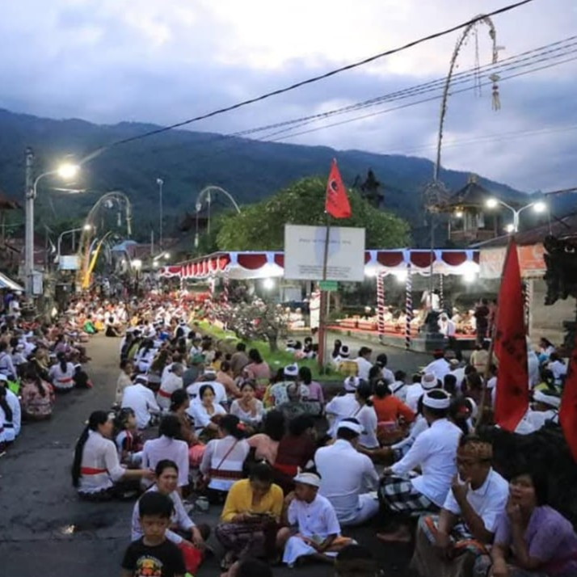
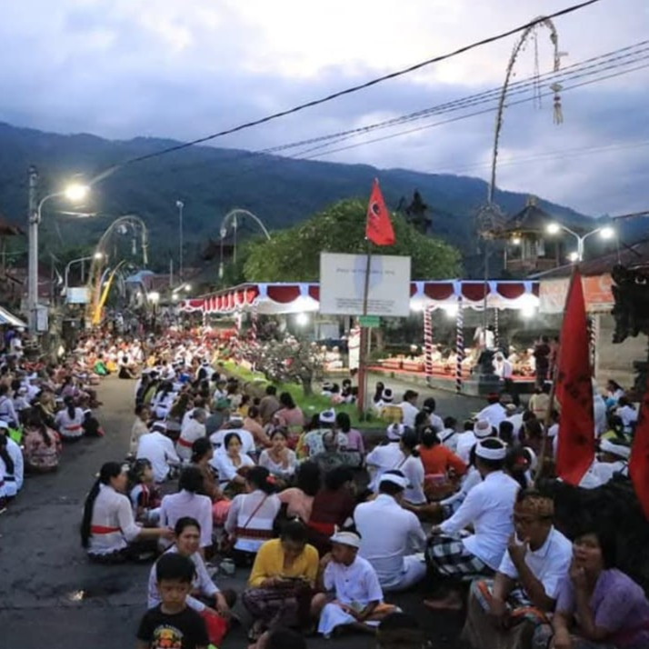

Unique Traditions of Sambirenteng


Mecakcakan
A unique rooster fighting tradition usually held before the Negakang tradition.
Cakcakan is a traditional rooster-matching ritual held by the customary village community of Sambirenteng.
According to the beliefs of the Sambirenteng people, in the past, as Tilem Kepitu (the seventh new moon) approached, strange and unusual occurrences began to take place in the village. In response, the village elders engaged in deep meditation. During this meditation, they received a pawisik (spiritual message or divine revelation) instructing them to perform a pecaruan cakcakan—a ritual offering involving the rooster-matching ceremony.
Following this spiritual guidance, the Cakcakan ceremony was held, which later developed into the Cakcakan Tradition, observed annually during Tilem Kepitu.

 

Negakang
A communal meal tradition at the village center after Mecakcakan, involving the entire village.
In the Negakang / Megibung tradition, the community brings rice and meat dishes from the Cakcakan ritual offerings, known as be cundang. This tradition takes place in the village center, where all the villagers gather and take their designated seats.
The signal to begin the tradition is given by the sounding of the kul-kul (a traditional bamboo slit drum), played by the village priest (pemangku).
Everything is done simultaneously, symbolizing the unity and togetherness of the people of Sambirenteng Village.

Ngerebeg
A ritual offering to the village’s unseen spiritual guardians
The Ngerebeg ceremony is held annually on Tilem Kawolu (the eighth new moon). This ceremony is a form of offering to the village’s spiritual guardians in the unseen realm (niskala), intended to maintain the balance and safety of the village.
The tradition involves several stages, such as megibung (communal dining), ngocorin, and a procession around the village.
The megibung in this ceremony is different from that in the Negakang tradition. In Ngerebeg, the megibung is dedicated specifically to the unseen spiritual guardians of the village.
More details...
Natural Tourism
Sambirenteng is also known for its natural beauty. Tourist spots include:
Sambirenteng Beach
A beautiful black sand beach with sunrise views, clear waters for snorkeling over coral reefs, and traditional boat rides.
Sunrise Trekking
A morning hike through the scenic Sanghyang hills, fresh air, and sunrise views with light breakfast.

Yeh Mampeh Waterfall
Located in nearby Les village, this hidden waterfall remains pristine and tranquil—ideal for those seeking peace away from the city.

Making Palm Sugar
Sambirenteng is known for high-quality palm sugar. Visitors can learn the traditional process—from tapping sap, boiling, to forming sugar blocks.